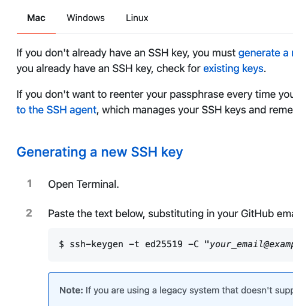

-
To connect your computer to your GitHub account, you first need to generate an SSH key.
If you're using Windows, you can avoid the following by just downloading the GitHub Desktop app to clone repositories and not deal with SSH Keys. However, it's recomended that you follow the steps below so you can learn to set up and use Git anywhere.
-
Don't forget Homebrew.
Homebrew after running the Git for Mac Installer, you need to run in it in your Terminal, or you'll have a big problem if you don't do it.
- This is third.